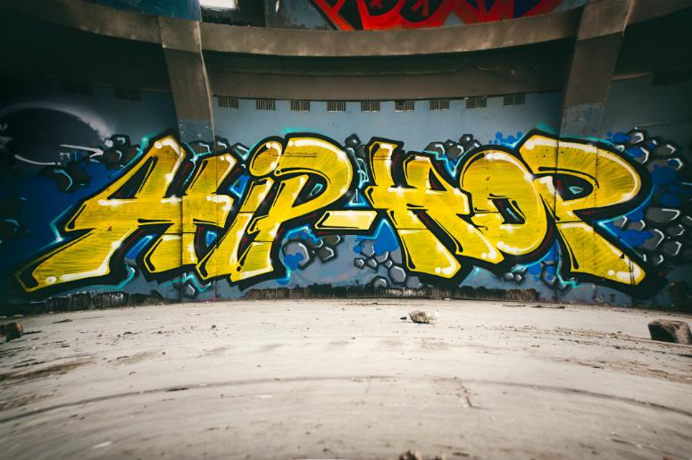
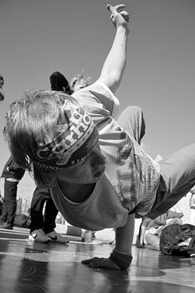
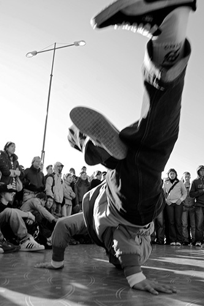
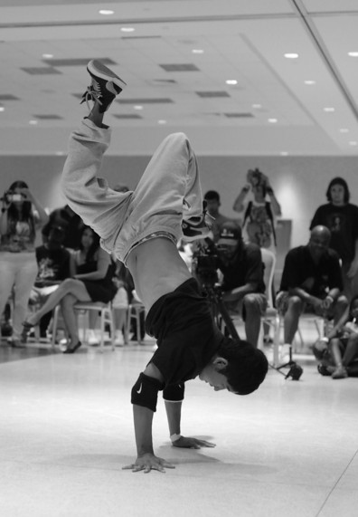
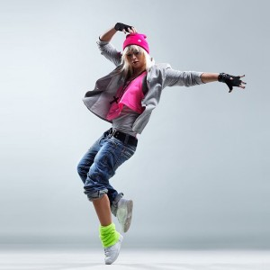
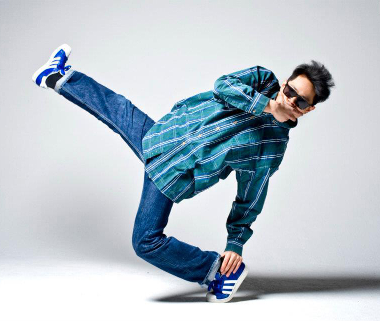
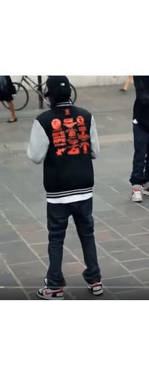

El baile de hip-hop se refiere a estilos de baile urbano interpretados principalmente con musica hip hop o que han evolucionado como parte de su cultura.
Algunos pasos de baile se detallan a continuacion:
"Breaking:"
Breaking incluye cuatro bailes fundamentales: toprock, pasos orientados al trabajo de pies realizados mientras se esta de pie; downrock, pasos realizado con ambas manos y pies en el piso; freezes, poses elegantes hechas en tus manos; y power moves, movimientos acrobaticos complejos e impresionantes.
  "Locking:"
En el locking, los bailarines mantienen sus posiciones mas tiempo. El lock es el movimiento principal utilizado en el locking. Es similar a un congelamiento o una pausa repentina. El baile de un locker se caracteriza por el hacer un locking frecuentemente en su lugar y luego de un breve freeze se mueve nuevamente.
 ¡¡¡¡ LET'S DANCE !!!!
Realizado por Sebastian Quiel